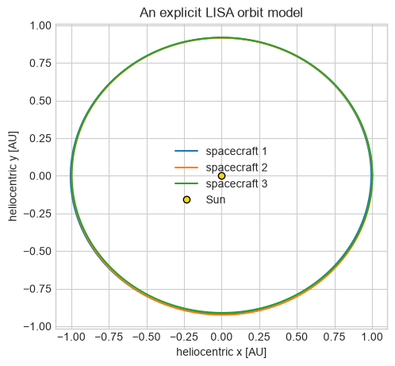
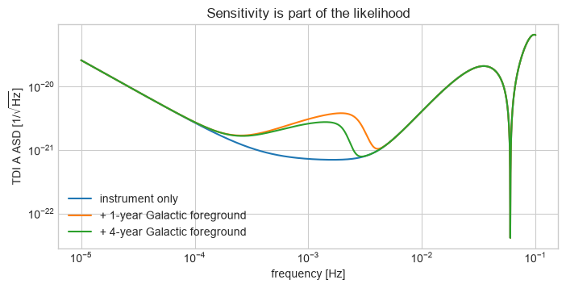
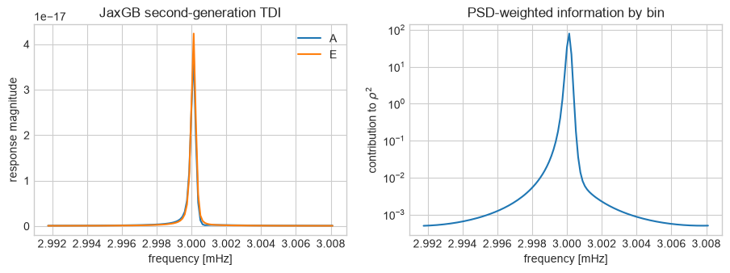
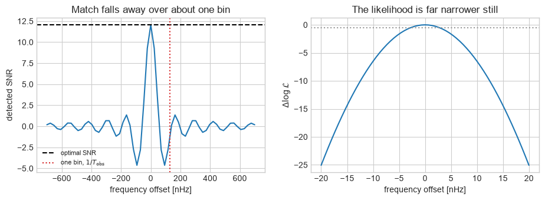
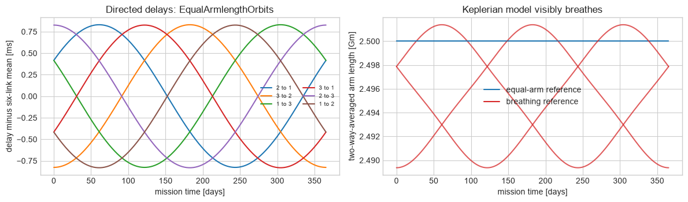
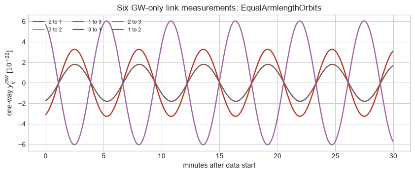
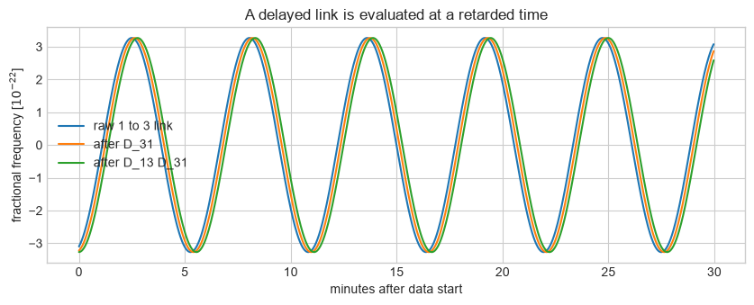
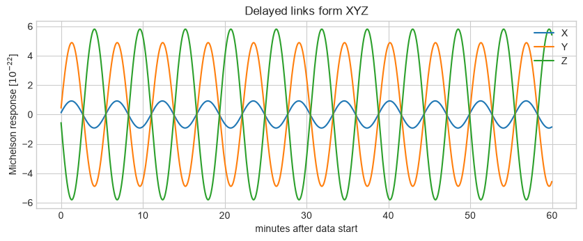
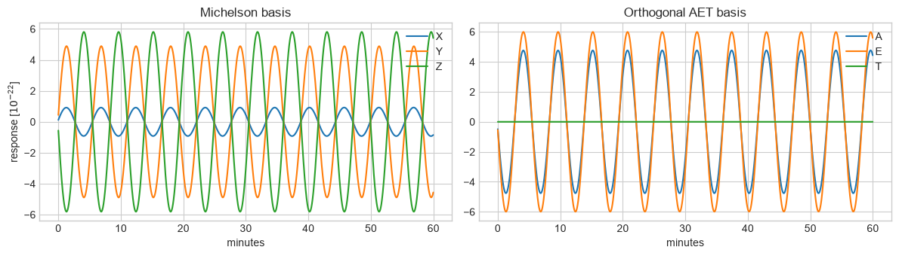
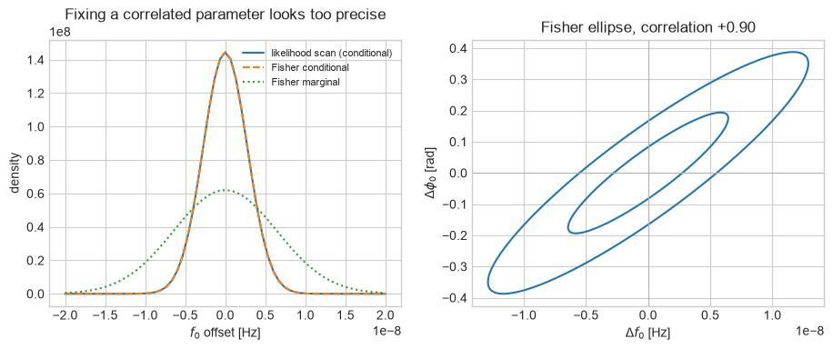

Part 3A: LISA signals, response, and analysis codes#
FQCP 2026 · Bayesian parameter estimation for gravitational-wave sources
Goal and route#
Connect LISA’s source zoo to its moving constellation, delayed links, TDI variables, sensitivity, and likelihood interfaces.
Live route
Follow source zoo -> moving response -> sensitivity -> likelihood. The exact link-delay and XYZ/AET construction is a read-later extension.
Animation guide. The orbit animation keeps one binary fixed and moves the constellation. Read its three panels together: geometry changes the arm projection, the response envelope, and the Doppler phase. The triangle is enlarged for visibility; the response calculation uses the physical orbit.
import os, sys, subprocess, importlib.util
IN_COLAB = "COLAB_RELEASE_TAG" in os.environ
needed = ("lisatools", "gpubackendtools", "jaxgb", "eryn", "wdm_transform")
if any(importlib.util.find_spec(package) is None for package in needed):
if IN_COLAB:
subprocess.check_call(
[
sys.executable,
"-m",
"pip",
"install",
"-q",
"lisaanalysistools==1.2.5",
"gpubackendtools==0.1.1",
"jaxgb==0.2.1",
"astropy==7.2.0",
"eryn==1.2.6",
"wdm-transform==0.5.0",
]
)
else:
raise ImportError("Install the pinned LISA requirements, or run in Colab.")
import itertools
import time
import warnings
import numpy as np
import matplotlib.pyplot as plt
from IPython.display import HTML, display
from matplotlib.animation import FuncAnimation
from jax import config
config.update("jax_enable_x64", True)
warnings.filterwarnings("ignore", message="IProgress not found.*")
from lisatools.sensitivity import (
A1TDISens,
E1TDISens,
SensitivityMatrix,
get_sensitivity,
)
from lisatools.utils.constants import YRSID_SI
from lisaorbits import EqualArmlengthOrbits, KeplerianOrbits, LINKS
from lisaorbits.utils import emitter, receiver
from lisaconstants import c as C_SI
from jaxgb.jaxgb import JaxGB
from jaxgb.params import GBObject
from wdm_transform import (
TimeSeries as WDMTimeSeries,
WDM,
wdm_inner_product,
wdm_noise_variance,
)
rng = np.random.default_rng(20260817)
plt.style.use("seaborn-v0_8-whitegrid")
def show_animation(animation):
# H.264 video: ~40x smaller in the notebook than one PNG per frame
try:
return display(HTML(animation.to_html5_video()))
except RuntimeError: # ffmpeg unavailable: fall back to per-frame PNGs
return display(HTML(animation.to_jshtml()))
1. LISA’s band and source zoo#
Ground-based detectors observe roughly tens of Hz to kHz. LISA targets approximately \(10^{-4}\)–\(10^{-1}\) Hz, containing Galactic compact binaries, massive-black-hole binaries, EMRIs, stellar-origin binaries, stochastic backgrounds, and instrument noise. Long observations make many signals overlap.
Unlike a static right-angle detector, LISA is a heliocentric triangle that cartwheels as it orbits. Six delayed one-way laser links are combined into time-delay interferometry (TDI) variables. Orbital modulation helps localisation, while finite arms create a frequency-dependent response.
What is the LISA data object?
TDI is not a cosmetic re-labelling of a strain time series: delayed link measurements cancel laser frequency noise and define the channels whose response and noise enter inference. In the simple likelihood below we use A and E as independent channels; this is an analysis approximation to state and check, not a property of every possible data product.
Why LISA parameter estimation is unusually coupled#
Feature |
Typical transient LVK CBC analysis |
LISA analysis |
|---|---|---|
signal duration in band |
seconds to minutes for many CBCs |
months to years for many sources |
response during one signal |
detector geometry often changes little |
constellation motion modulates the signal |
data channels |
separated ground detectors |
correlated laser links combined into TDI |
source overlap |
often analyse a short segment around one event |
many persistent sources share the same bins |
noise/foreground |
PSD estimated around an event, with caveats |
instrument noise and astrophysical foreground may evolve together |
catalogue size |
event trigger supplies a candidate |
number of resolvable sources can be unknown |
The hard part is not that Bayes’ theorem changes. The signal, response, noise, and catalogue blocks become more strongly coupled, so fitting one source while treating everything else as fixed can bias the residual seen by the next source.
What the mixed data stream looks like#
These LISA Data Challenge views make the overlap concrete. The same year of Sangria data contains persistent Galactic structure, instrument noise, and shorter massive-black-hole-binary signals.
Time-domain mixture |
Time-frequency view |
|---|---|
|
|


Official LDC2A Sangria illustrations from the LISA Data Challenge. The key lesson is visual: there is no pristine data segment belonging to only one source class.
1a. Choose the orbit model#
The orbit object supplies spacecraft positions, directed link vectors, and retarded light-travel times. The default below keeps the approximately equal-arm configuration. To regenerate the link and TDI data with flexing, unequal arms, comment the first assignment and uncomment the second, then rerun from this cell.
year = YRSID_SI
AU = 149597870700.0
# One visible switch controls the complete orbit-to-TDI rerun.
USE_BREATHING_ORBITS = False
orbits = KeplerianOrbits() if USE_BREATHING_ORBITS else EqualArmlengthOrbits()
print(f"active orbit model: {type(orbits).__name__}")
times = np.linspace(0, year, 240)
positions = np.asarray(orbits.compute_position(times, [1, 2, 3]))
fig, ax = plt.subplots(figsize=(5.4, 5.4))
for i, label in enumerate(["spacecraft 1", "spacecraft 2", "spacecraft 3"]):
ax.plot(positions[:, i, 0] / AU, positions[:, i, 1] / AU, label=label)
ax.plot(0, 0, "o", color="gold", mec="k", label="Sun")
ax.set(
xlabel="heliocentric x [AU]",
ylabel="heliocentric y [AU]",
title="An explicit LISA orbit model",
aspect="equal",
)
ax.legend()
plt.show()
active orbit model: EqualArmlengthOrbits

Animation: orbital motion becomes response modulation#
The binary in this animation is fixed on the sky. LISA’s changing orientation changes the antenna projection, while its motion around the Sun changes the arrival-time phase. Those two measured modulations—not the orbit picture by itself—are what help encode sky position.
The right-hand curves use a low-frequency Michelson response proxy to make the causal link visible. The exact delayed-link and TDI responses are built in the cells immediately below.
Predict before running: Hold a binary fixed on the sky. Which observed features can change during a year even if the binary itself is nearly monochromatic, and why can those changes help localisation?
# Fixed source and polarisation tensors used only for this response-intuition
# panel. The full finite-arm, delayed-link calculation follows below.
animation_ra, animation_dec = 1.0, 0.4
animation_source = np.array(
[
np.cos(animation_dec) * np.cos(animation_ra),
np.cos(animation_dec) * np.sin(animation_ra),
np.sin(animation_dec),
]
)
animation_k = -animation_source
animation_p = np.cross(animation_k, np.array([0.0, 0.0, 1.0]))
animation_p /= np.linalg.norm(animation_p)
animation_q = np.cross(animation_k, animation_p)
animation_plus = np.outer(animation_p, animation_p) - np.outer(animation_q, animation_q)
animation_cross = np.outer(animation_p, animation_q) + np.outer(
animation_q, animation_p
)
def unit_rows(values):
return values / np.linalg.norm(values, axis=1)[:, None]
animation_arms = [
unit_rows(positions[:, j] - positions[:, i]) for i, j in [(0, 1), (1, 2), (2, 0)]
]
n12, n23, n31 = animation_arms
n13 = -n31
michelson_tensor = 0.5 * (
np.einsum("ni,nj->nij", n12, n12) - np.einsum("ni,nj->nij", n13, n13)
)
f_plus = np.einsum("nij,ij->n", michelson_tensor, animation_plus)
f_cross = np.einsum("nij,ij->n", michelson_tensor, animation_cross)
response_envelope = np.hypot(f_plus, f_cross)
animation_barycentre = positions.mean(axis=1)
animation_frequency = 3e-3
doppler_phase_cycles = (
animation_frequency * (animation_barycentre @ animation_source) / C_SI
)
arm_projections = np.asarray(
[
np.abs(np.einsum("ni,ij,nj->n", arm, animation_plus, arm))
for arm in animation_arms
]
)
# The real triangle is tiny on an AU-scale plot. Enlarge it around its true
# barycentre so the cartwheel can be seen, and label that display choice.
DISPLAY_TRIANGLE_SCALE = 8
display_positions = animation_barycentre[:, None, :] + DISPLAY_TRIANGLE_SCALE * (
positions - animation_barycentre[:, None, :]
)
orbit_frames = np.arange(0, len(times), 5)
fig = plt.figure(figsize=(11, 5.2))
grid = fig.add_gridspec(2, 2, width_ratios=(1.05, 1), hspace=0.38)
orbit_ax = fig.add_subplot(grid[:, 0])
response_ax = fig.add_subplot(grid[0, 1])
phase_ax = fig.add_subplot(grid[1, 1])
orbit_ax.plot(
animation_barycentre[:, 0] / AU, animation_barycentre[:, 1] / AU, color=".75", lw=1
)
orbit_ax.plot(0, 0, "o", color="gold", mec="k", ms=9)
source_arrow = animation_source[:2] / np.linalg.norm(animation_source[:2])
orbit_ax.arrow(
0,
0,
0.43 * source_arrow[0],
0.43 * source_arrow[1],
width=0.008,
color="C3",
length_includes_head=True,
)
orbit_ax.text(
0.47 * source_arrow[0],
0.47 * source_arrow[1],
"fixed source",
color="C3",
ha="center",
)
(spacecraft_points,) = orbit_ax.plot([], [], "o", color="k", ms=4)
arm_lines = [orbit_ax.plot([], [], lw=3)[0] for _ in range(3)]
orbit_ax.text(
0.03,
0.03,
f"triangle size x{DISPLAY_TRIANGLE_SCALE} for display",
transform=orbit_ax.transAxes,
fontsize=8,
color=".35",
)
orbit_ax.set(
xlim=(-1.2, 1.2), ylim=(-1.2, 1.2), aspect="equal", xlabel="x [AU]", ylabel="y [AU]"
)
mission_days = times / 86400
response_ax.plot(mission_days, response_envelope, color="C0")
(response_marker,) = response_ax.plot([], [], "o", color="C0", ms=7)
response_ax.set(
xlim=(0, mission_days[-1]),
ylim=(0, 1.08 * response_envelope.max()),
ylabel="antenna amplitude",
title="same binary, changing projection",
)
phase_ax.plot(mission_days, doppler_phase_cycles, color="C3")
(phase_marker,) = phase_ax.plot([], [], "o", color="C3", ms=7)
phase_ax.axhline(0, color=".8", lw=0.8)
phase_ax.set(
xlim=(0, mission_days[-1]),
ylim=(1.08 * doppler_phase_cycles.min(), 1.08 * doppler_phase_cycles.max()),
xlabel="mission time [days]",
ylabel="Doppler phase [cycles]",
)
def animate_response(frame):
i = orbit_frames[frame]
current = display_positions[i, :, :2] / AU
spacecraft_points.set_data(current[:, 0], current[:, 1])
for arm_index, (first, second) in enumerate([(0, 1), (1, 2), (2, 0)]):
arm_lines[arm_index].set_data(
current[[first, second], 0], current[[first, second], 1]
)
arm_lines[arm_index].set_color(plt.cm.viridis(arm_projections[arm_index, i]))
response_marker.set_data([mission_days[i]], [response_envelope[i]])
phase_marker.set_data([mission_days[i]], [doppler_phase_cycles[i]])
orbit_ax.set_title(f"LISA at day {mission_days[i]:.0f}; arm colour = GW projection")
return (*arm_lines, spacecraft_points, response_marker, phase_marker)
orbit_response_animation = FuncAnimation(
fig, animate_response, frames=len(orbit_frames), interval=110
)
plt.close(fig)
show_animation(orbit_response_animation)
2. Sensitivity and Galactic confusion#
As in LATW Tutorial 1, start with the noise model. The unresolved Galactic foreground changes with observing time because longer data resolve and subtract more binaries.
Predict before running: At which frequencies should a longer observation change the total sensitivity most: where instrumental noise dominates, or where the unresolved Galactic foreground dominates?
f_curve = np.logspace(-5, -1, 1800)
instrument = SensitivityMatrix(f_curve, [A1TDISens, E1TDISens])
one_year = SensitivityMatrix(
f_curve, [A1TDISens, E1TDISens], stochastic_params=(1 * year,)
)
four_year = SensitivityMatrix(
f_curve, [A1TDISens, E1TDISens], stochastic_params=(4 * year,)
)
fig, ax = plt.subplots(figsize=(8, 3.6))
ax.loglog(f_curve, np.sqrt(instrument.sens_mat[0]), label="instrument only")
ax.loglog(f_curve, np.sqrt(one_year.sens_mat[0]), label="+ 1-year Galactic foreground")
ax.loglog(f_curve, np.sqrt(four_year.sens_mat[0]), label="+ 4-year Galactic foreground")
ax.set(
xlabel="frequency [Hz]",
ylabel=r"TDI A ASD [1/$\sqrt{\mathrm{Hz}}$]",
title="Sensitivity is part of the likelihood",
)
ax.legend()
plt.show()

Expected output — open this if your cell has not run yet

3. Inner product, SNR, and likelihood#
For independent A and E channels,
These are exactly the objects from the LVK notebook. Bayes’ theorem does not change when the detector does.
What changes: the instrument response, the source durations, the channels, the band, and the fact that the model is global rather than one source.
\(\Delta f=1/T_{\rm obs}\), so a longer mission means finer frequency resolution as well as more accumulated SNR.
Predict before running: If two frequency templates are one Fourier bin apart, will they be distinguishable? How should that answer change with observation time and with SNR?
t_obs = 90 * 86400.0
simulator = JaxGB(orbits, t_obs=t_obs, t0=0, n=128)
source = GBObject(
f0=np.array([3e-3]),
fdot=np.array([1e-17]),
A=np.array([2e-22]),
ra=np.array([1.0]),
dec=np.array([0.4]),
psi=np.array([0.3]),
iota=np.array([0.8]),
phi0=np.array([0.2]),
t_init=0.0,
)
parameters = source.to_jaxgb_array(t0=0)
A, E, T = simulator.get_tdi(parameters, tdi_generation=2, tdi_combination="AET")
frequency = np.asarray(
simulator.get_frequency_grid(simulator.get_kmin(parameters[:, 0]))
)[0]
df = 1 / t_obs
template = np.stack([np.asarray(A)[0], np.asarray(E)[0]])
psd = np.stack(
[
get_sensitivity(frequency, sens_fn=A1TDISens, stochastic_params=(t_obs,)),
get_sensitivity(frequency, sens_fn=E1TDISens, stochastic_params=(t_obs,)),
]
)
def inner(a, b):
return 4 * df * np.real(np.sum(np.conj(a) * b / psd))
optimal_snr = np.sqrt(inner(template, template))
print(f"90-day optimal A+E SNR: {optimal_snr:.2f}")
fig, axes = plt.subplots(1, 2, figsize=(11, 3.4))
axes[0].plot(1e3 * frequency, np.abs(template[0]), label="A")
axes[0].plot(1e3 * frequency, np.abs(template[1]), label="E")
axes[0].set(
xlabel="frequency [mHz]",
ylabel="response magnitude",
title="JaxGB second-generation TDI",
)
axes[0].legend()
axes[1].semilogy(1e3 * frequency, 4 * df * np.sum(np.abs(template) ** 2 / psd, axis=0))
axes[1].set(
xlabel="frequency [mHz]",
ylabel=r"contribution to $\rho^2$",
title="PSD-weighted information by bin",
)
plt.show()
90-day optimal A+E SNR: 12.06

Code studio: turn the inner product into a likelihood#
Implement the Gaussian log likelihood
\(\log\mathcal L=-\tfrac12(d-h\mid d-h)\) using the inner function above.
The checks use two limiting cases: a perfect model has zero residual, while a
zero model is worse by \(\rho_{\rm opt}^2/2\).
def student_lisa_log_likelihood(model, observed=template):
# YOUR CODE HERE
return None
perfect_logl = student_lisa_log_likelihood(template)
zero_logl = student_lisa_log_likelihood(np.zeros_like(template))
if perfect_logl is None or zero_logl is None:
print("Your turn: construct the residual and return -0.5 times its inner product.")
else:
np.testing.assert_allclose(perfect_logl, 0.0, atol=1e-10)
np.testing.assert_allclose(zero_logl, -0.5 * optimal_snr**2, rtol=1e-10)
print("check passed")
Your turn: construct the residual and return -0.5 times its inner product.
Manual one-parameter likelihood#
Perturb the source frequency, regenerate the moving-constellation response, and compare optimal SNR with detected/matched SNR. A loud template can still match the data poorly.
Watch the two scales in the plots below. The overlap between two templates decays once they are separated by about one frequency bin, \(1/T_{\rm obs}\). The likelihood is narrower than that by roughly the signal-to-noise ratio, which is why a 90-day observation pins \(f_0\) to a small fraction of a bin. Longer missions help twice over: more bins, and more SNR per source.
def trial_template(f0_offset):
"""Regenerate the moving-constellation response at a shifted frequency."""
trial = GBObject(
f0=np.array([3e-3 + f0_offset]),
fdot=np.array([1e-17]),
A=np.array([2e-22]),
ra=np.array([1.0]),
dec=np.array([0.4]),
psi=np.array([0.3]),
iota=np.array([0.8]),
phi0=np.array([0.2]),
t_init=0.0,
)
kmin = int(simulator.get_kmin(parameters[:, 0])[0])
a, e, _ = simulator.sum_tdi(
trial.to_jaxgb_array(t0=0),
kmin,
kmin + simulator.n,
tdi_generation=2,
tdi_combination="AET",
)
return np.stack([np.asarray(a), np.asarray(e)])
# Two very different scales matter here. The overlap between templates decays
# over roughly a frequency bin, 1/T_obs, but the likelihood is narrower than
# that by about the signal-to-noise ratio.
wide_offsets = np.linspace(-7e-7, 7e-7, 61)
detected = []
for offset in wide_offsets:
h = trial_template(offset)
detected.append(inner(template, h) / np.sqrt(inner(h, h)))
offsets = np.linspace(-2e-8, 2e-8, 61)
logL, trial_templates = [], []
for offset in offsets:
h = trial_template(offset)
trial_templates.append(h)
logL.append(-0.5 * inner(template - h, template - h))
fig, axes = plt.subplots(1, 2, figsize=(11, 3.4))
axes[0].plot(1e9 * wide_offsets, detected)
axes[0].axhline(optimal_snr, color="k", ls="--", label="optimal SNR")
axes[0].axvline(1e9 / t_obs, color="C3", ls=":", label=r"one bin, $1/T_{\rm obs}$")
axes[0].set(
xlabel="frequency offset [nHz]",
ylabel="detected SNR",
title="Match falls away over about one bin",
)
axes[0].legend(fontsize=8)
axes[1].plot(1e9 * offsets, np.array(logL) - np.max(logL))
axes[1].axhline(-0.5, color="0.6", ls=":")
axes[1].set(
xlabel="frequency offset [nHz]",
ylabel=r"$\Delta \log \mathcal{L}$",
title="The likelihood is far narrower still",
)
plt.show()
print(f"one frequency bin : {1 / t_obs:.3e} Hz")
print(f"plotted likelihood span: {offsets[-1] - offsets[0]:.3e} Hz")

one frequency bin : 1.286e-07 Hz
plotted likelihood span: 4.000e-08 Hz
End of the live route
The beginner-level chain is now complete: LISA’s motion changes the response, the sensitivity supplies the noise weighting, and the same inner-product likelihood used for LVK data compares model and observation. The sections below expose how link measurements become TDI channels and how local Fisher forecasts approximate uncertainty.
Analysis-code map#
Tool family |
Typical role in a LISA analysis |
|---|---|
LISA Analysis Tools / |
sensitivity, response containers, likelihood plumbing |
JaxGB |
fast Galactic-binary response generation |
GLASS / Erebor-style pipelines |
overlapping-source and global-fit workflows |
Eryn |
ensemble and trans-dimensional sampling machinery |
Gemoo-style searches |
source search/proposal construction in crowded data |
These packages are not interchangeable single commands. Each occupies a layer between waveform/response generation, search, likelihood construction, and posterior exploration. The following notebooks isolate the global-fit, PSD, and time-frequency layers.
Extension: from one-way links to XYZ/AET#
On a first pass, read the diagrams and outputs rather than every interpolation and plotting line. The important data hierarchy is
The code remains visible so advanced students can trace the delay convention and rerun the complete chain with breathing arms.
1b. Orbits become six directed delays#
For a measurement received at time \(t\) on spacecraft \(j\), a photon was emitted from spacecraft \(i\) at the retarded time \(t-L_{ij}(t)\), where \(L_{ij}\) is the light-travel time in seconds:
The two directions along one geometric arm are distinct links. Even an
approximately equal-arm moving constellation has small directional differences
from the constellation motion. KeplerianOrbits adds visible arm flexing.
link_codes = np.asarray(LINKS)
link_labels = [f"{int(emitter(code))} to {int(receiver(code))}" for code in link_codes]
delay_times = np.linspace(0, year, 366)
selected_light_times = np.asarray(orbits.compute_ltt(delay_times, link_codes))
# This cheap reference comparison shows breathing without changing the active
# data-generation configuration selected above.
equal_reference = EqualArmlengthOrbits()
breathing_reference = KeplerianOrbits()
equal_delays = np.asarray(equal_reference.compute_ltt(delay_times, link_codes))
breathing_delays = np.asarray(breathing_reference.compute_ltt(delay_times, link_codes))
fig, axes = plt.subplots(1, 2, figsize=(12, 3.6))
for column, label in enumerate(link_labels):
axes[0].plot(
delay_times / 86400,
1e3 * (selected_light_times[:, column] - selected_light_times.mean()),
label=label,
)
axes[0].set(
xlabel="mission time [days]",
ylabel="delay minus six-link mean [ms]",
title=f"Directed delays: {type(orbits).__name__}",
)
axes[0].legend(ncol=2, fontsize=7)
# Average the two directions on each geometric arm before comparing flexing.
arm_pairs = [(0, 5), (1, 4), (2, 3)]
for first, second in arm_pairs:
axes[1].plot(
delay_times / 86400,
C_SI * 0.5 * (equal_delays[:, first] + equal_delays[:, second]) / 1e9,
color="C0",
alpha=0.65,
)
axes[1].plot(
delay_times / 86400,
C_SI * 0.5 * (breathing_delays[:, first] + breathing_delays[:, second]) / 1e9,
color="C3",
alpha=0.75,
)
axes[1].plot([], [], color="C0", label="equal-arm reference")
axes[1].plot([], [], color="C3", label="breathing reference")
axes[1].set(
xlabel="mission time [days]",
ylabel="two-way-averaged arm length [Gm]",
title="Keplerian model visibly breathes",
)
axes[1].legend()
fig.tight_layout()
plt.show()
print(f"active six-link delay span: {1e3*np.ptp(selected_light_times):.3f} ms")
print(f"breathing-reference delay span: {1e3*np.ptp(breathing_delays):.3f} ms")

active six-link delay span: 1.661 ms
breathing-reference delay span: 41.737 ms
1c. Generate the one-way link data#
We now generate a compact GW-only fractional-frequency link dataset for a single monochromatic plane wave. For the convention used here, \(i\to j\) means emitter \(i\), receiver \(j\), and
with \(u_j=t-\hat{\mathbf k}\cdot\mathbf x_j(t)/c\) and \(u_i=t-L_{ij}(t)-\hat{\mathbf k}\cdot \mathbf x_i(t-L_{ij})/c\). The two metric samples are the reception and emission endpoints of one laser link.
This cell does not simulate the full phasemeter budget: laser, proof-mass, optical-path, clock, and other noises are deliberately omitted so the geometry and delay algebra remain visible.
TDI_DT = 2.0
TDI_DURATION_DAYS = 0.25
TDI_START_DAY = 90.0
TDI_MARGIN = 60.0 # longer than the four nested light-time delays used below
tdi_start = TDI_START_DAY * 86400
tdi_duration = TDI_DURATION_DAYS * 86400
tdi_time_full = np.arange(
tdi_start - TDI_MARGIN, tdi_start + tdi_duration + TDI_DT, TDI_DT
)
tdi_light_times = np.asarray(orbits.compute_ltt(tdi_time_full, link_codes))
GW_LINK_FREQUENCY = 3e-3
GW_LINK_AMPLITUDE = 1e-20
source_ra, source_dec = 1.0, 0.4
source_direction = np.array(
[
np.cos(source_dec) * np.cos(source_ra),
np.cos(source_dec) * np.sin(source_ra),
np.sin(source_dec),
]
)
propagation_direction = -source_direction
reference_axis = np.array([0.0, 0.0, 1.0])
polarisation_p = np.cross(propagation_direction, reference_axis)
polarisation_p /= np.linalg.norm(polarisation_p)
polarisation_q = np.cross(propagation_direction, polarisation_p)
plus_tensor = np.outer(polarisation_p, polarisation_p) - np.outer(
polarisation_q, polarisation_q
)
link_data = {}
link_delays = {}
for column, code in enumerate(link_codes):
emitting = int(emitter(code))
receiving = int(receiver(code))
light_time = tdi_light_times[:, column]
link_vector = np.asarray(orbits.compute_unit_vector(tdi_time_full, [code]))[:, 0, :]
receiver_position = np.asarray(orbits.compute_position(tdi_time_full, [receiving]))[
:, 0, :
]
emitter_position = np.asarray(
orbits.compute_position(tdi_time_full - light_time, [emitting])
)[:, 0, :]
receiver_phase = (
2
* np.pi
* GW_LINK_FREQUENCY
* (tdi_time_full - receiver_position @ propagation_direction / C_SI)
)
emitter_phase = (
2
* np.pi
* GW_LINK_FREQUENCY
* (tdi_time_full - light_time - emitter_position @ propagation_direction / C_SI)
)
projection = (
0.5
* np.einsum("ni,ij,nj->n", link_vector, plus_tensor, link_vector)
/ (1 - link_vector @ propagation_direction)
)
pair = (emitting, receiving)
link_data[pair] = (
GW_LINK_AMPLITUDE
* projection
* (np.cos(receiver_phase) - np.cos(emitter_phase))
)
link_delays[pair] = light_time
plot_window = (tdi_time_full >= tdi_start) & (tdi_time_full < tdi_start + 1800)
fig, ax = plt.subplots(figsize=(10, 3.6))
for pair, series in link_data.items():
ax.plot(
(tdi_time_full[plot_window] - tdi_start) / 60,
1e22 * series[plot_window],
label=f"{pair[0]} to {pair[1]}",
)
ax.set(
xlabel="minutes after data start",
ylabel=r"one-way $y_{ij}^{GW}$ [$10^{-22}$]",
title=f"Six GW-only link measurements: {type(orbits).__name__}",
)
ax.legend(ncol=3, fontsize=8)
plt.show()

1d. Apply time-dependent delay operators#
The basic TDI operation is not an integer array shift. Each directed link has its own time-dependent delay:
The interpolation below makes that retarded-time evaluation explicit. Nested delays are applied one at a time; for breathing arms their order matters.
def delay_link(series, pair):
"""Apply D_ij using the active orbit's time-dependent i-to-j delay."""
query_time = tdi_time_full - link_delays[pair]
finite = np.isfinite(series)
return np.interp(
query_time, tdi_time_full[finite], series[finite], left=np.nan, right=np.nan
)
example_pair = (3, 1)
example_return = (1, 3)
link_once_delayed = delay_link(link_data[example_return], example_pair)
link_round_trip = delay_link(link_once_delayed, example_return)
fig, ax = plt.subplots(figsize=(10, 3.4))
ax.plot(
(tdi_time_full[plot_window] - tdi_start) / 60,
1e22 * link_data[example_return][plot_window],
label="raw 1 to 3 link",
)
ax.plot(
(tdi_time_full[plot_window] - tdi_start) / 60,
1e22 * link_once_delayed[plot_window],
label="after D_31",
)
ax.plot(
(tdi_time_full[plot_window] - tdi_start) / 60,
1e22 * link_round_trip[plot_window],
label="after D_13 D_31",
)
ax.set(
xlabel="minutes after data start",
ylabel=r"fractional frequency [$10^{-22}$]",
title="A delayed link is evaluated at a retarded time",
)
ax.legend()
plt.show()

1e. Build Michelson \(X,Y,Z\)#
With \(y_{ij}\) denoting emitter \(i\to\) receiver \(j\), the first-generation unequal-arm Michelson channel centred on spacecraft 1 is
\(Y\) and \(Z\) follow by cycling the spacecraft indices. The code deliberately mirrors the equation rather than hiding the delay paths in a package call.
def michelson_xyz_channel(central, first_arm, second_arm):
"""First-generation Michelson TDI centred on `central`."""
y = lambda emitting, receiving: link_data[(emitting, receiving)]
d = lambda values, emitting, receiving: delay_link(values, (emitting, receiving))
positive = (
y(second_arm, central)
+ d(y(central, second_arm), second_arm, central)
+ d(d(y(first_arm, central), central, second_arm), second_arm, central)
+ d(
d(d(y(central, first_arm), first_arm, central), central, second_arm),
second_arm,
central,
)
)
negative = (
y(first_arm, central)
+ d(y(central, first_arm), first_arm, central)
+ d(d(y(second_arm, central), central, first_arm), first_arm, central)
+ d(
d(d(y(central, second_arm), second_arm, central), central, first_arm),
first_arm,
central,
)
)
return positive - negative
X_full = michelson_xyz_channel(1, 2, 3)
Y_full = michelson_xyz_channel(2, 3, 1)
Z_full = michelson_xyz_channel(3, 1, 2)
tdi_keep = tdi_time_full >= tdi_start
tdi_time = tdi_time_full[tdi_keep] - tdi_start
X, Y, Z = (channel[tdi_keep] for channel in (X_full, Y_full, Z_full))
assert not any(np.isnan(channel).any() for channel in (X, Y, Z))
fig, ax = plt.subplots(figsize=(10, 3.5))
show = tdi_time < 3600
for channel, label in zip((X, Y, Z), ("X", "Y", "Z")):
ax.plot(tdi_time[show] / 60, 1e22 * channel[show], label=label)
ax.set(
xlabel="minutes after data start",
ylabel=r"Michelson response [$10^{-22}$]",
title="Delayed links form XYZ",
)
ax.legend()
plt.show()

1f. Rotate \(X,Y,Z\) into \(A,E,T\)#
Using the same orthonormal convention as JaxGB and LISA Analysis Tools,
This matrix rotation is orthonormal. Calling the resulting channels statistically independent additionally requires the appropriate symmetric \(XYZ\) noise covariance; breathing unequal arms can reintroduce A/E/T cross spectra.
For an equal-arm constellation and wavelengths long compared with the arms,
\(T\) is an approximate GW-null channel. Unequal breathing arms spoil the exact
symmetry, so uncommenting KeplerianOrbits above and rerunning increases the
low-frequency \(T\) leakage in this first-generation construction.
A = (Z - X) / np.sqrt(2)
E = (X - 2 * Y + Z) / np.sqrt(6)
T = (X + Y + Z) / np.sqrt(3)
fig, axes = plt.subplots(1, 2, figsize=(12, 3.5))
for channel, label in zip((X, Y, Z), ("X", "Y", "Z")):
axes[0].plot(tdi_time[show] / 60, 1e22 * channel[show], label=label)
for channel, label in zip((A, E, T), ("A", "E", "T")):
axes[1].plot(tdi_time[show] / 60, 1e22 * channel[show], label=label)
axes[0].set(xlabel="minutes", ylabel=r"response [$10^{-22}$]", title="Michelson basis")
axes[1].set(xlabel="minutes", title="Orthogonal AET basis")
for ax in axes:
ax.legend()
fig.tight_layout()
plt.show()
print(f"active orbit model: {type(orbits).__name__}")
for label, channel in zip(("A", "E", "T"), (A, E, T)):
print(f"RMS {label}: {np.std(channel):.3e}")
print(f"T/A RMS ratio: {np.std(T)/np.std(A):.3e}")

active orbit model: EqualArmlengthOrbits
RMS A: 3.376e-22
RMS E: 4.222e-22
RMS T: 3.766e-26
T/A RMS ratio: 1.115e-04
TDI generation boundary
This transparent laboratory uses GW-only links and first-generation Michelson TDI. It demonstrates the orbit, link, retarded-delay, XYZ, and AET data objects. It does not demonstrate laser-noise cancellation for a flexing constellation: time-dependent delay operators do not commute, and production breathing-arm data require the correctly ordered second-generation TDI combinations.
Question#
Equal-arm orbits make T an exact null. Real LISA arms breathe, so it is not.
Change USE_BREATHING_ORBITS to True at the top of Section 1a — where
the orbits are built, not here — and rerun this notebook from that cell down.
Then compare np.std(T) with np.std(A) before and after.
By what factor does T grow once the arms are unequal?
Is T still useful as a noise diagnostic at that level?
At which frequencies would you expect the cancellation to fail first?
# Your code here: report the T/A RMS ratio for both orbit models.
Hint
The cancellation depends on frequency, arm equality, response details, and which physical contribution is being considered.
Extension: Fisher forecasts for LISA#
Skip this section on the live route. The preceding likelihood scan contains the main lesson; this extension explains why a one-parameter slice can look more precise than a marginal posterior.
Finite differences use the full moving-constellation TDI response.
Because amplitude is a pure scaling, \(\sigma_{\ln A}=1/\rho\) is an exact check.
The scan holds phase fixed, so it should match the conditional error.
Marginalising over correlated phase broadens the frequency uncertainty by \(1/\sqrt{1-\rho_{f_0\phi_0}^2}\).
Fisher ellipses assume high SNR and local linearity. They cannot represent multiple modes, hard prior edges, or strongly curved posteriors.
fisher_truth = dict(
f0=3e-3, fdot=1e-17, A=2e-22, ra=1.0, dec=0.4, psi=0.3, iota=0.8, phi0=0.2
)
def fisher_response(**overrides):
"""TDI A and E on the fixed band, for the source with parameters replaced."""
values = dict(fisher_truth)
values.update(overrides)
array = GBObject(
**{key: np.array([value]) for key, value in values.items()}, t_init=0.0
).to_jaxgb_array(t0=0)
a, e, _ = simulator.sum_tdi(
array,
int(simulator.get_kmin(parameters[:, 0])[0]),
int(simulator.get_kmin(parameters[:, 0])[0]) + simulator.n,
tdi_generation=2,
tdi_combination="AET",
)
return np.stack([np.asarray(a), np.asarray(e)])
def derivative(key, step):
"""Central difference; amplitude is differentiated with respect to log A."""
if key == "A":
plus = fisher_response(A=fisher_truth["A"] * np.exp(step))
minus = fisher_response(A=fisher_truth["A"] * np.exp(-step))
else:
plus = fisher_response(**{key: fisher_truth[key] + step})
minus = fisher_response(**{key: fisher_truth[key] - step})
return (plus - minus) / (2 * step)
fisher_labels = [r"$f_0$", r"$\ln A$", r"$\phi_0$"]
derivatives = [derivative("f0", 1e-9), derivative("A", 1e-3), derivative("phi0", 1e-3)]
fisher_matrix = np.array([[inner(a, b) for b in derivatives] for a in derivatives])
fisher_covariance = np.linalg.inv(fisher_matrix)
marginal_sd = np.sqrt(np.diag(fisher_covariance))
conditional_sd = 1 / np.sqrt(np.diag(fisher_matrix))
correlation = fisher_covariance / np.outer(marginal_sd, marginal_sd)
print(f"optimal SNR : {optimal_snr:.3f}")
print(f"sigma(ln A) from the Fisher : {marginal_sd[1]:.6f}")
print(f"1 / SNR : {1 / optimal_snr:.6f}")
print(f"f0-phi0 correlation : {correlation[0, 2]:+.3f}")
print()
print(f"marginal sigma(f0) : {marginal_sd[0]:.3e} Hz")
print(f"conditional sigma(f0) : {conditional_sd[0]:.3e} Hz")
print(f"ratio : {conditional_sd[0] / marginal_sd[0]:.3f}")
print(f"sqrt(1 - rho^2) : {np.sqrt(1 - correlation[0, 2] ** 2):.3f}")
optimal SNR : 12.056
sigma(ln A) from the Fisher : 0.082948
1 / SNR : 0.082948
f0-phi0 correlation : +0.904
marginal sigma(f0) : 6.446e-09 Hz
conditional sigma(f0) : 2.759e-09 Hz
ratio : 0.428
sqrt(1 - rho^2) : 0.428
# Turn the earlier one-dimensional scan into a normalised posterior and
# compare its width with both Fisher predictions.
scan_posterior = np.exp(np.array(logL) - np.max(logL))
scan_posterior /= np.trapezoid(scan_posterior, offsets)
scan_mean = np.trapezoid(scan_posterior * offsets, offsets)
scan_sd = np.sqrt(np.trapezoid(scan_posterior * (offsets - scan_mean) ** 2, offsets))
angles = np.linspace(0, 2 * np.pi, 200)
circle = np.column_stack([np.cos(angles), np.sin(angles)])
block = fisher_covariance[np.ix_([0, 2], [0, 2])]
eigenvalues, eigenvectors = np.linalg.eigh(block)
fig, (scan_ax, ellipse_ax) = plt.subplots(1, 2, figsize=(11, 3.8))
scan_ax.plot(offsets, scan_posterior, label="likelihood scan (conditional)")
gaussian = np.exp(-0.5 * (offsets / conditional_sd[0]) ** 2)
scan_ax.plot(
offsets,
gaussian / np.trapezoid(gaussian, offsets),
"--",
label="Fisher conditional",
)
wide = np.exp(-0.5 * (offsets / marginal_sd[0]) ** 2)
scan_ax.plot(offsets, wide / np.trapezoid(wide, offsets), ":", label="Fisher marginal")
scan_ax.set(
xlabel=r"$f_0$ offset [Hz]",
ylabel="density",
title="Fixing a correlated parameter looks too precise",
)
scan_ax.legend(fontsize=8)
for n_sigma in (1, 2):
ellipse = n_sigma * circle @ (eigenvectors * np.sqrt(eigenvalues)).T
ellipse_ax.plot(ellipse[:, 0], ellipse[:, 1], color="C0")
ellipse_ax.axvline(0, color="0.7", lw=0.8)
ellipse_ax.axhline(0, color="0.7", lw=0.8)
ellipse_ax.set(
xlabel=r"$\Delta f_0$ [Hz]",
ylabel=r"$\Delta\phi_0$ [rad]",
title=f"Fisher ellipse, correlation {correlation[0, 2]:+.2f}",
)
plt.show()
print(f"scan sigma(f0) : {scan_sd:.3e} Hz")
print(f"conditional sigma(f0) : {conditional_sd[0]:.3e} Hz")
print(f"marginal sigma(f0) : {marginal_sd[0]:.3e} Hz")

scan sigma(f0) : 2.766e-09 Hz
conditional sigma(f0) : 2.759e-09 Hz
marginal sigma(f0) : 6.446e-09 Hz
Optional package-level likelihood interface#
The local lisa_analysis_workshop calls this abstraction an
AnalysisContainer. It bundles a DataResidualArray with a compatible
SensitivityMatrix, then exposes inner products, SNRs, and template
likelihoods. This does not replace understanding the formula—it reduces unit,
frequency-grid, and channel bookkeeping once the formula is understood.
warnings.filterwarnings("ignore", category=SyntaxWarning, module=r"lisatools\..*")
from lisatools.analysiscontainer import AnalysisContainer
from lisatools.datacontainer import DataResidualArray
latw_data = DataResidualArray(template, f_arr=frequency)
latw_sensitivity = SensitivityMatrix(
frequency,
[A1TDISens, E1TDISens],
stochastic_params=(t_obs,),
)
latw_analysis = AnalysisContainer(latw_data, latw_sensitivity)
best_index = int(np.argmax(logL))
offset_index = 0
latw_best_template = DataResidualArray(trial_templates[best_index], f_arr=frequency)
latw_offset_template = DataResidualArray(trial_templates[offset_index], f_arr=frequency)
latw_optimal_snr, latw_detected_snr = latw_analysis.template_snr(latw_best_template)
latw_best_log_likelihood = latw_analysis.template_likelihood(latw_best_template)
latw_offset_log_likelihood = latw_analysis.template_likelihood(latw_offset_template)
print(f"AnalysisContainer optimal SNR: {latw_optimal_snr:.2f}")
print(f"AnalysisContainer detected SNR: {latw_detected_snr:.2f}")
print(
"log-likelihood drop for an offset template:",
f"{latw_offset_log_likelihood - latw_best_log_likelihood:.2f}",
)
AnalysisContainer optimal SNR: 12.06
AnalysisContainer detected SNR: 12.06
log-likelihood drop for an offset template: -25.07
Read or try next#
ESA’s LISA in a nutshell gives the mission-scale picture; its short LISA video collection is useful before the orbit-response animation.
The LISA Data Challenge provides mixed source-plus-noise datasets rather than isolated teaching signals.
LISA Analysis Tools documents the sensitivity and analysis-container interfaces used below.
Next: